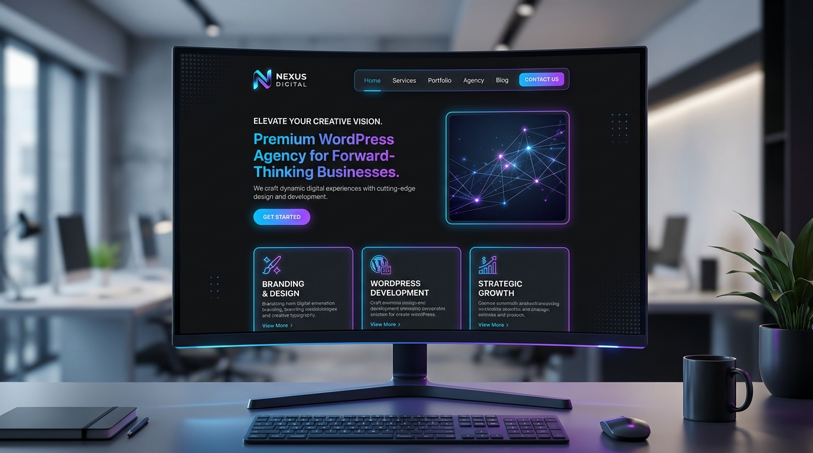

WordPress • Business
Custom WordPress Business Agency
A fully custom, responsive agency website built on WordPress with custom block designs, performance optimization, SEO metadata, and dynamic client portfolio showcasing.